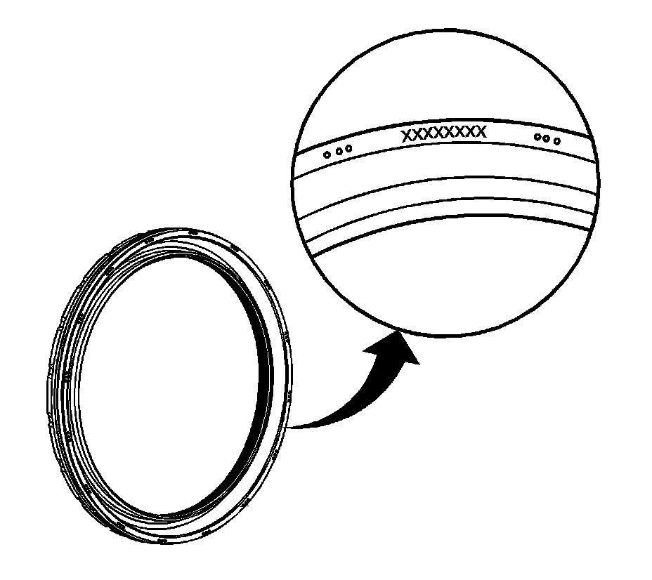
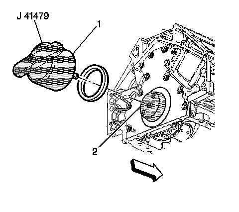

76. Crankshaft Rear Oil Seal Installation
Crankshaft Rear Oil Seal Installation
Tools Required
^ J 41479 Crankshaft Rear Oil Seal Installer
^ J 41479-2A Crankshaft Rear Oil Seal Installation Guide

Important: For proper orientation, note the installation direction of the oil seal. The oil seal is a reverse-lip design. The part number is applied to the outside face of the seal, as shown.
1. Inspect the seal and identify the part number markings for proper orientation.

2. Install the J 41479 or J 41479-2A cone (2) and bolts onto the rear of the crankshaft. J 41479-2A may be required for manual transmission applications.
3. Tighten the bolts until snug. Do not overtighten.
4. Install the rear oil seal onto the tapered cone (2) and push the seal to the rear seal bore. Install the oil seal with the part number markings facing away from the engine.
5. Thread the J 41479 threaded rod into the tapered cone until the tool (1) contacts the oil seal.
6. Align the oil seal onto the tool (1).
7. Rotate the handle of the tool (1) clockwise until the seal enters the rear housing and bottoms into the seal bore.
8. Remove the tool.